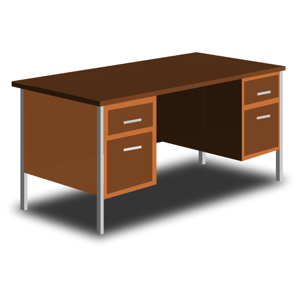
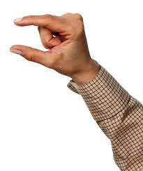
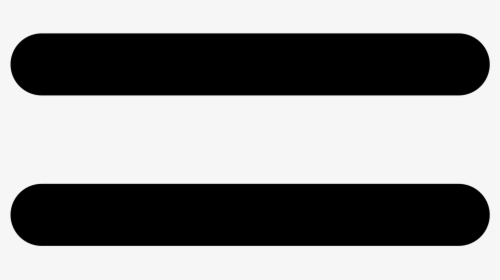
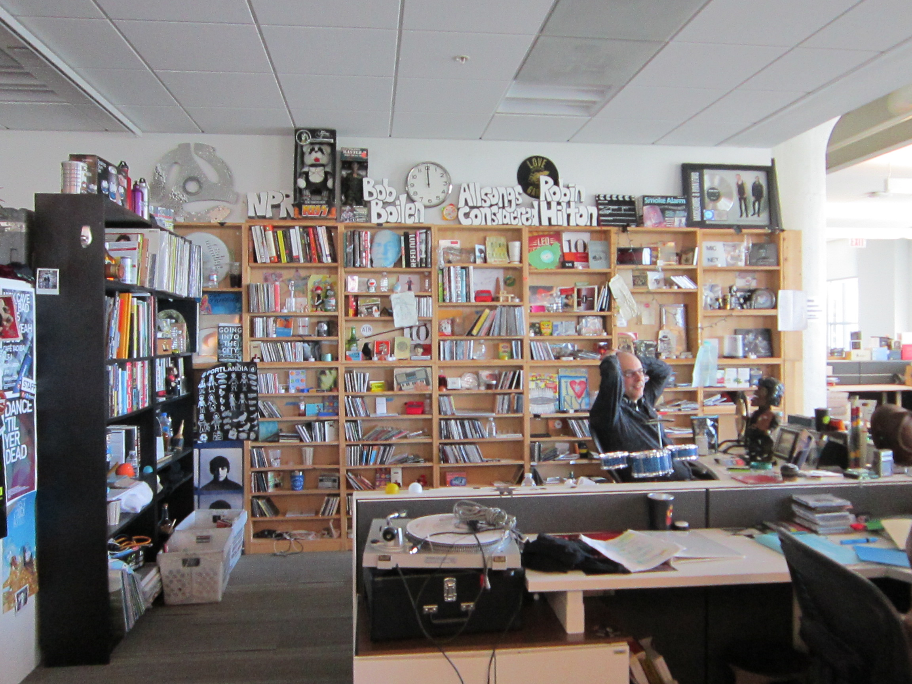

What Is Tiny Desk?
Tiny Desk Concerts, a video series of live concerts hosted by NPR Music
at the desk of "All Songs Considered" host Bob Boilen in Washington, D.C.
The first Tiny Desk Concert came about in 2008 after Boilen and NPR Music
Editor Stephen Thompson left a bar show frustrated that they couldn't hear
the music over the crowd noise. Thompson joked that the musician, folk-singer
Laura Gibson, should just perform at Boilen's desk.
NPR Tiny Desk has hosted guests ranging from Taylor Swift to Yo-Yo Ma to the Wu-Tang Clan!
Here are 20 of my favorite performances! Enjoy!